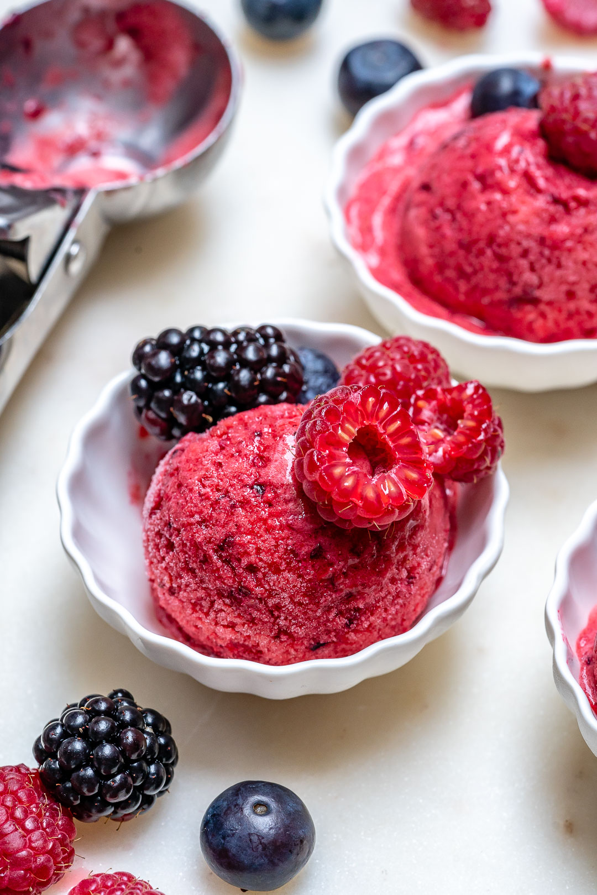

Berry Sorbet

Sorbet, the epitome of frozen delight, beckons with its vibrant hues and tantalizing flavors.
Each spoonful, a burst of sun-ripened fruits, offers a refreshing escape into pure indulgence.
With its delicate texture and exquisite taste, sorbet transforms every moment into a symphony of sweetness and blissful decadence.
Ingredients
- 2 1/2 cups mixed frozen berries
- 2 tsps fresh squeezed lemon juice
- 1-2 Tbsps raw honey, or pure maple syrup
- 2-3 Tbsps warm water, only if needed
Instructions
- Place all of your ingredients, except for the warm water, into a high-speed blender or food processor.
- Process by pulsing until smooth and creamy, stopping to scrape the sides several times, and adding just a touch of warm water if needed.
- Transfer the sorbet mixture to a freezer-safe container, cover and freeze for at least 2-3 hours before serving.
- Use an ice cream scoop to dish your sorbet into small serving dishes.
- Garnish with fresh berries.